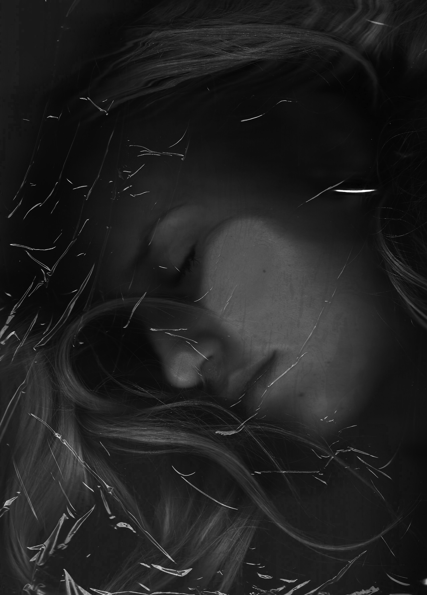

Quirien Schendstok
Visual Artist & Photographer
Quirien Schendstok uses photography as her chosen medium to challenge conventional notions of reality, with a particular focus on issues such as the sexualization of women, the pressures and violence they experience, street harassment, and eating disorders. Through her work, she explores how these themes shape both individual identity and collective perception.
She believes that art holds the power to evoke emotion, provoke thought, and ultimately expand our understanding of the world around us. With each photograph she creates, Quirien invites viewers to step into a visual journey — one that encourages them to see through her eyes and engage with perspectives that may differ from their own.
Her practice is rooted in portrait photography, often incorporating the use of alter egos and constructed characters. These figures act as vessels for storytelling, embodying complex emotions and lived experiences. By creating these characters, she is able to externalize internal struggles and societal pressures, making them visible and tangible.
Her intention is not only to create visually compelling images, but also to open space for dialogue — encouraging reflection, empathy, and awareness around topics that remain urgent and, at times, difficult to confront.
Available for commissions and collaborations worldwide.